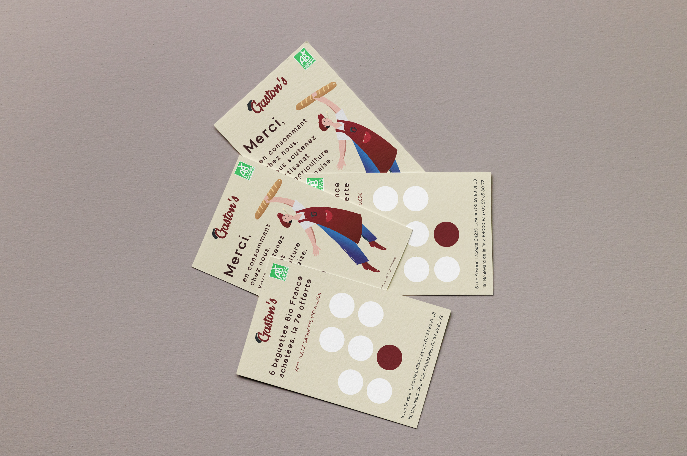
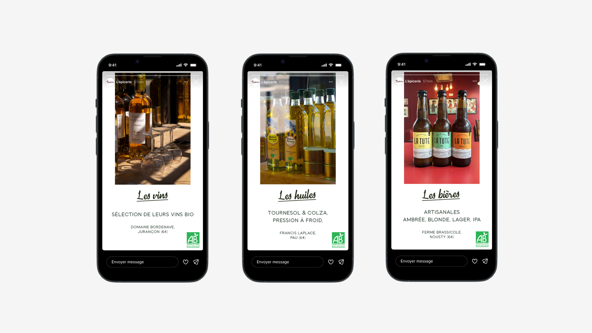
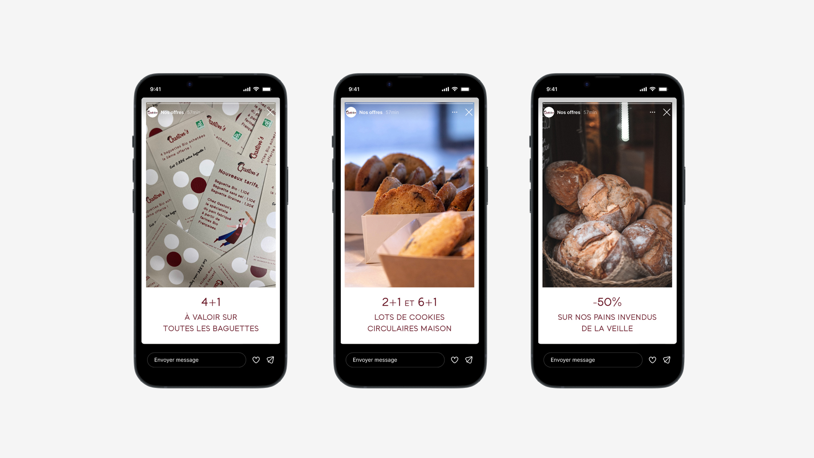
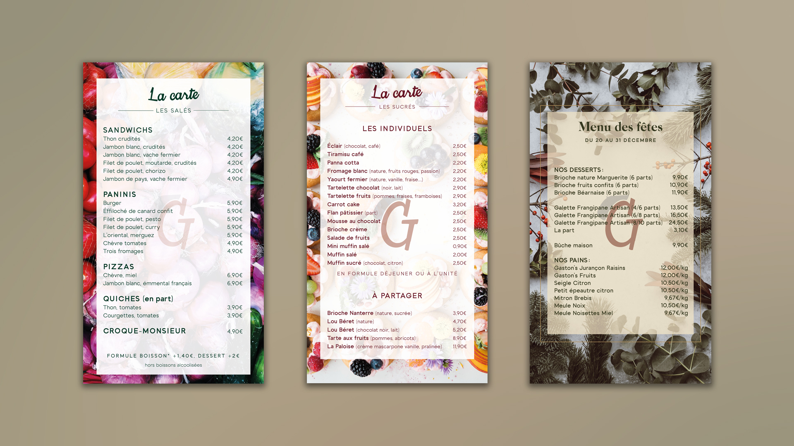

Gaston's est un duo de boulangeries indépendantes bio, ouvertes à Pau et Lescar entre 2018 et 2019. Il s'agit d'une entreprise chaleureuse imaginée par Xavier Garçon,
animé par une volonté de rendre accessible le bien manger, le bio pour tous, dans un environnement convivial et respectueux.
J'ai eu l'honneur de collaborer pour Gaston's, à la fois en tant que graphiste freelance et community manager, pour gérer la présence de la marque sur l'ensemble des réseaux sociaux,
afin de l'aider à véhiculer ses valeurs à travers divers contenus visuels (et textuels qui) lui ressemblent.



